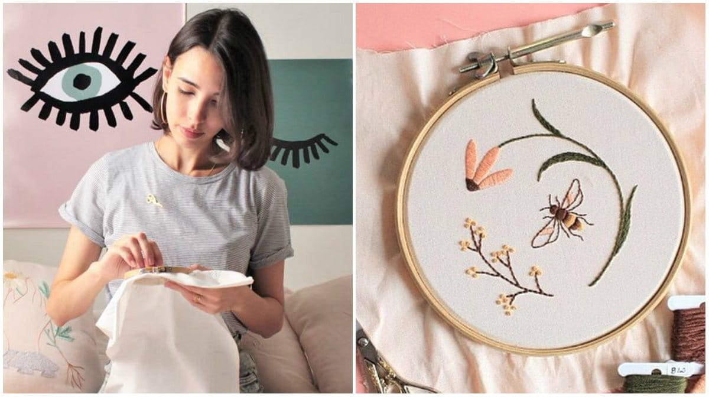

Foto de Clube do Bordado
Bordado livre
A técnica de bordado livre é interessante, porque, como seu próprio nome diz, permite maior liberdade ao criar os pontos, uma vez que eles poderão ser maiores ou menores, de acordo com o seu gosto pessoal. Pontos clássicos, como o ponto cruz, podem ser utilizados no bordado livre, mas há pontos que funcionam bem no bordado livre (por exemplo, o ponto corrente e o nó francês).
Ver mais